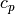
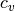
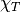

pythermophy documentation¶
pythermophy is a python module for predicting various thermophysical properties of real fluids. The fluids can be currently modelled using the following equations of state:
- Ideal Gas (IG)
- Redlich-Kwong (RK)
- Soave-Redlich-Kwong (SRK)
- Peng-Robinson (PR)
- Lee-Kesler (LK)
At the moment, the following thermophysical properties can be predicted as a
function of temperature  (K) and pressure
(K) and pressure  (Pa):
(Pa):
- Density,
 (kg/m^3)
(kg/m^3) - Compressibility factor,

- Speed of sound,
 (m/s)
(m/s) - Isobaric specific heat capacity (real and ideal),  (J/mol/K)
- Isochoric specific heat capacity (real and ideal),  (J/mol/K)
- Departure function of specific heat capacities (J/mol/K)
- Adiabatic index,

- Isothermal compressibility,  (1/Pa)
Installation¶
To install pythermophy, it is recommended to clone the git repository and use
the provided setup.py as follows.
$ git clone https://github.com/j-jith/pythermophy
$ cd pythermophy
$ python setup.py install
The module was written and tested on Python 3, and therefore it is recommended to use pythermophy with Python 3.
Usage¶
# Import module
import pythermophy as pt
# Temperature and pressure
T_0 = 328
p_0 = 1e6
# Load fluid from file
fluid = pt.Fluid.init_from_file('./fluids/CO2')
# Ideal gas EOS
ig = pt.IG(fluid)
print('Ideal gas')
print('Z: ', ig.get_Z(T_0, p_0)
print('rho: ', ig.get_rho(T_0, p_0))
print('cp: ', ig.get_cp(T_0, p_0))
print('cv: ', ig.get_cv(T_0, p_0))
print('beta: ', ig.get_isothermal_compressibility(T_0, p_0))
print('gamma: ', ig.get_adiabatic_index(T_0, p_0))
print('c: ', ig.get_speed_of_sound(T_0, p_0))
# Redlich-Kwong EOS
rk = pt.RK(fluid)
print('\nRedlich-Kwong')
print('Z: ', rk.get_Z(T_0, p_0)
print('rho: ', rk.get_rho(T_0, p_0))
print('cp: ', rk.get_cp(T_0, p_0))
print('cv: ', rk.get_cv(T_0, p_0))
print('beta: ', rk.get_isothermal_compressibility(T_0, p_0))
print('gamma: ', rk.get_adiabatic_index(T_0, p_0))
print('c: ', rk.get_speed_of_sound(T_0, p_0))
# Soave-Redlich-Kwong EOS
srk = pt.SRK(fluid)
print('\nSoave-Redlich-Kwong')
print('Z: ', srk.get_Z(T_0, p_0)
print('rho: ', srk.get_rho(T_0, p_0))
print('cp: ', srk.get_cp(T_0, p_0))
print('cv: ', srk.get_cv(T_0, p_0))
print('beta: ', srk.get_isothermal_compressibility(T_0, p_0))
print('gamma: ', srk.get_adiabatic_index(T_0, p_0))
print('c: ', srk.get_speed_of_sound(T_0, p_0))
# Peng-Robinson EOS
pr = pt.PR(fluid)
print('\nPeng-Robinson')
print('Z: ', pr.get_Z(T_0, p_0)
print('rho: ', pr.get_rho(T_0, p_0))
print('cp: ', pr.get_cp(T_0, p_0))
print('cv: ', pr.get_cv(T_0, p_0))
print('beta: ', pr.get_isothermal_compressibility(T_0, p_0))
print('gamma: ', pr.get_adiabatic_index(T_0, p_0))
print('c: ', pr.get_speed_of_sound(T_0, p_0))
# Lee-Kesler EOS
lk = pt.LK(fluid)
print('Lee-Kesler')
print('Z: ', lk.get_Z(T_0, p_0)
print('rho: ', lk.get_rho(T_0, p_0))
print('cp: ', lk.get_cp(T_0, p_0))
print('cv: ', lk.get_cv(T_0, p_0))
print('beta: ', lk.get_isothermal_compressibility(T_0, p_0))
print('gamma: ', lk.get_adiabatic_index(T_0, p_0))
print('c: ', lk.get_speed_of_sound(T_0, p_0))
Here the fluid is loaded from the following file
# Name of the fluid
name: CO2
# Molar mass [kg/mol]
molar_mass: 44.01e-3
# Critical temperature [K]
T_crit: 304.25
# Critical pressure [Pa]
p_crit: 7.38e+6
# Acentric factor [dimensionless]
acentric: 0.228
# Cp = a + b*T + c*T^2 + d*T^3 [J/mol/K]
ideal_cp_coeffs: [22.26, 5.981e-2, -3.501e-5, 7.469e-9]
Read more¶
Module contents¶
-
class
pythermophy.IG(fluid)¶
-
class
pythermophy.LK(fluid)¶
-
class
pythermophy.PR(fluid)¶
-
class
pythermophy.RK(fluid)¶
-
class
pythermophy.SRK(fluid)¶